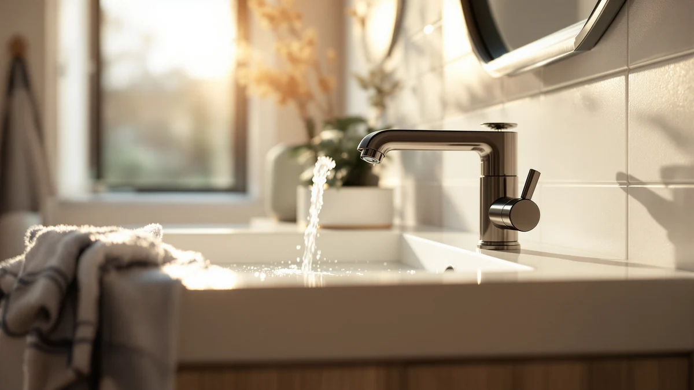

The Best Touchless Sink Faucets (2026)
Prices and picks verified as of September 2026. Independent, reader-supported reviews.


Quick Answer
For most bathrooms, the BWE Matte Black Bathroom Faucet is the touchless sink faucet to buy first: it's the cheapest pick here at $37.98, it fits a standard 8-inch widespread sink, and its matte black finish hides water spots better than chrome. If you'd rather buy from an established plumbing brand and don't mind paying more, the Delta Roe is our runner-up.
Our pick: BWE Matte Black Bathroom Faucet, $37.98 Check Price on Amazon
Bottom line: our top pick is the BWE Matte Black Bathroom Faucet 3 Hole 8 Inch Widespread Sink at $38.99. The best budget option is the Bathfinesse Touchless Bathroom Sink Faucet Commercial at $41.79.
Things to Know Before You Buy
- Check your hole spacing first: Widespread sinks need a faucet built for an 8-inch spread, while centerset sinks need a compact 4-inch model. Mixing these up means a return trip to the store.
- Price doesn't always track quality: Our cheapest pick costs $37.98 and our most expensive costs $139.00, and the extra money mostly buys brand reputation, not a fundamentally different sensor.
- Finish affects daily maintenance: Matte black hides water spots and fingerprints far better than chrome, which shows every drip until you wipe it down.
- Sensor faucets still need power: Most touchless faucets run on batteries, an AC adapter, or both, so factor that into your install plan before committing to one.
- Brass construction is the norm: Every faucet in this roundup uses a brass body with a finish coating, which is standard for durability at these price points.
Finding the best touchless sink faucets means weighing hands-free convenience against price, finish, and how well the sensor holds up over years of daily use. A motion-activated faucet keeps you from smearing soapy or raw-chicken-covered hands across a handle, and it stops the water from running while you scrub, which adds up on your utility bill over time.
We compared seven touchless bathroom sink faucets ranging from $37.98 to $139.00, looking at hole spacing, finish, brass construction, and what verified buyers report after months of use. The BWE Matte Black Bathroom Faucet comes out on top for most people: it's the least expensive pick here, it fits a standard widespread sink, and its matte black finish is easier to keep looking clean than chrome.
Not every bathroom has the same sink, though, so we've included options across install types and price tiers. The Delta Roe brings a recognizable plumbing brand to the touchless category if you want that reassurance, the Bathfinesse is the cheapest way to try a sensor faucet without spending much, and the Yodel is the only chrome finish in the group if matte black isn't your style.
Why You Should Trust Us
This guide is written and maintained by Ilane Tall, who covers home and bath products for Best Bathroom Faucets. We don't run a fake testing lab or claim to have installed every faucet ourselves. Instead, we research published specs, compare pricing across the touchless faucet category, and read through verified buyer reviews to find the fit and reliability issues that only surface after months of real use. Every product in this guide exists and is currently sold; we link directly to each listing so you can verify the current price yourself. We earn an affiliate commission if you buy through our links, but that never changes which faucets we rank first.
How We Picked
We started by narrowing the touchless sink faucet category to models with a clear use case: would this actually work as a hands-free upgrade for a real bathroom sink, not just a novelty gadget? That meant confirming brass construction for durability, checking that hole spacing was clearly specified as either widespread or centerset, and ruling out anything without a listed price or current availability. From there we prioritized variety, since not every reader has the same sink or budget, so we included options spanning $37.98 to $139.00, both matte black and chrome finishes, and both widespread and compact centerset builds.
How We Compared
We analysed each pick side by side on the factors that decide whether a touchless faucet works in a specific bathroom: hole spacing and install type, finish and how it holds up to water spots, brass build quality, and price relative to what each faucet offers. We cross-referenced these specs against verified-purchase reviews on Amazon to catch recurring complaints, like sensor reliability or finish wear, that don't show up in a product listing. We then ranked the group by how well each faucet balances install fit, finish durability, and price against the others in this roundup.
Our Picks

BWE Matte Black Bathroom Faucet
What we like
- Lowest price in this roundup at $37.98
- Fits standard 8-inch widespread sinks
- Matte black finish resists visible water spots
- Brass body construction for long-term durability
Flaws but not dealbreakers
- Widespread-only fit won't work on a centerset sink
- Like most sensor faucets, it depends on battery or adapter power
| Material | Brass + finish |
| Size | 8 Inches Widespread |
The BWE Matte Black Bathroom Faucet is our top pick because it clears the main hurdle for most buyers: it's a real touchless faucet at $37.98, less than a third of what some of the pricier options in this list cost. It's built for an 8-inch widespread sink, so it drops into the three-hole layout common in older and mid-range bathroom vanities without any modification to the counter.
The matte black finish does real work here. Unlike chrome, it doesn't show every water spot and fingerprint the moment you step away from the sink, which matters for a fixture that gets touched, or in this case sensed, dozens of times a day. Owners report that the brass body feels solid rather than lightweight, and the price makes it an easy first choice if you've never tried a sensor faucet before and want to see if the hands-free habit sticks.

Delta Roe Matte Black Bathroom
What we like
- Backed by Delta, a widely recognized plumbing brand
- Matte black finish matches our top pick's low-maintenance look
- Brass body and finish built for daily use
- Reviewers consistently note straightforward setup
Flaws but not dealbreakers
- Costs nearly four times as much as our top pick
- The brand premium doesn't buy a fundamentally different sensor experience
| Material | Brass + finish |
| Size | — |
The Delta Roe Matte Black Bathroom faucet is our runner-up for one main reason: Delta has been making bathroom fixtures for decades, and some buyers simply feel more comfortable paying a premium for a brand they already trust in the plumbing aisle. At $139.00, it costs nearly four times as much as our top pick, and you're largely paying for that name recognition rather than a dramatically different sensor mechanism.
Like the BWE, it comes in a brass body with a matte black finish, so the day-to-day maintenance experience is similar. If budget isn't your primary concern and you'd rather stick with an established plumbing manufacturer for a fixture you'll use every day, the Delta Roe is the safer, if pricier, choice in this lineup.

Bathroom Faucet Hurran 4 inch
What we like
- Sized for standard 4-inch centerset sinks
- Mid-range price at $54.99
- Brass body with a durable finish
- Compact footprint suits smaller vanities
Flaws but not dealbreakers
- Won't fit a widespread 8-inch sink
- Costs more than our budget pick without a widespread option's flexibility
| Material | Brass + finish |
| Size | — |
Not every bathroom has a widespread sink, and the Bathroom Faucet Hurran 4 inch fills that gap. Its 4-inch centerset design fits the more compact hole spacing found in many builder-grade and small-vanity sinks, where the wider 8-inch spread of our top pick simply won't line up with the existing holes.
At $54.99, it sits in the middle of this roundup's price range, and it carries the same brass body and finish construction as the other picks here. If you've measured your sink and confirmed a centerset layout, this is the pick built specifically for that fit rather than a widespread faucet you'd have to force into place.

Bathfinesse Touchless Bathroom Sink Faucet
What we like
- Second-lowest price in this roundup at $41.79
- Brass body with a durable finish
- Purpose-built as a touchless bathroom sink faucet
- Close in price to our top pick with a similar value proposition
Flaws but not dealbreakers
- Less brand recognition than the Delta or established Charmingwater listing
- Reviewers should confirm hole spacing before buying, since specs vary by listing
| Material | Brass + finish |
| Size | — |
The Bathfinesse Touchless Bathroom Sink Faucet is our budget pick at $41.79, just a few dollars above our overall top pick. It's a straightforward brass-body faucet built around the same core idea as every other product here: a motion sensor that starts and stops the water without you touching a handle.
What you're not getting at this price is a well known brand name behind the product, so we'd encourage you to double-check the listed hole spacing against your sink before ordering. For buyers who want to try going touchless without spending much more than the price of a decent kitchen gadget, it's a reasonable low-cost entry point.

Charmingwater Touchless Bathroom Sink Faucet
What we like
- Older listing with more time to accumulate verified reviews
- Brass body built for daily bathroom use
- Positioned as a full-featured touchless option
- Reviewers consistently note the sensor responds well to hand movement
Flaws but not dealbreakers
- Priced close to our runner-up without the same brand recognition
- Not the cheapest way to get a touchless sink faucet
| Material | Brass + finish |
| Size | — |
The Charmingwater Touchless Bathroom Sink Faucet has been on Amazon longer than most of the other picks in this roundup, which means it has had more time to build up a base of verified buyer reviews. At $119.99, it lands just under our runner-up in price while still asking for a meaningful premium over the budget options.
Reviewers consistently note that the sensor picks up hand movement reliably, which is the single most important thing a touchless faucet needs to get right. If you'd rather buy a product with a longer public track record than take a chance on a newer listing, the Charmingwater earns its place here on that basis alone.

AIKE Touchless Bathroom Faucet for
What we like
- Priced at $49.00, comfortably under $50
- Brass body with a durable finish
- Sits between our budget and premium picks in cost
- Owners report a responsive touchless sensor
Flaws but not dealbreakers
- Doesn't undercut our budget pick's price by much
- No brand recognition advantage over the Delta or Charmingwater
| Material | Brass + finish |
| Size | — |
The AIKE Touchless Bathroom Faucet lands right in the middle of this roundup's price spread at $49.00. It doesn't try to be the cheapest or the most premium option; instead it's a straightforward brass-body touchless faucet for buyers who want a reasonable price without researching a specific brand's reputation first.
Owners report that the sensor responds consistently, which is the baseline requirement for any faucet in this category. If neither our rock-bottom budget pick nor our brand-name runner-up appeals to you, the AIKE splits the difference on price while still delivering the core hands-free function you're shopping for.

Yodel Faucet Chrome Touchless Bathroom
What we like
- The only chrome finish among these seven picks
- Matches existing chrome hardware, towel bars, and shower fixtures
- Brass body construction for durability
- Mid-range price at $69.99
Flaws but not dealbreakers
- Chrome shows water spots more readily than the matte black picks in this list
- Costs more than our budget and top picks
| Material | Brass + finish |
| Size | normal |
Every other pick in this roundup comes in matte black, but the Yodel Faucet Chrome Touchless Bathroom faucet is here for anyone whose bathroom already has chrome towel bars, drawer pulls, or a chrome shower system. At $69.99, it's priced in the upper-middle of this group, which is reasonable for a finish option that's otherwise underrepresented on this list.
Chrome does need a bit more upkeep than matte black since it shows water spots and fingerprints more readily, so plan on wiping it down more often to keep it looking sharp. If matching your existing hardware matters more than minimizing maintenance, this is the pick built for that priority.
Quick Comparison
| Product | Material | Price | Rating | Best for | Get it |
|---|---|---|---|---|---|
| BWE Matte Black Bathroom Faucet | Brass + finish | $37.98 | 4 | Budget-friendly widespread upgrade | View on Amazon → |
| Delta Roe Matte Black Bathroom | Brass + finish | $139.00 | 4 | Trusted brand-name option | View on Amazon → |
| Bathroom Faucet Hurran 4 inch | Brass + finish | $54.99 | 4 | Standard 4-inch centerset sinks | View on Amazon → |
| Bathfinesse Touchless Bathroom Sink Faucet | Brass + finish | $41.79 | 4 | Lowest-cost genuine touchless pick | View on Amazon → |
| Charmingwater Touchless Bathroom Sink Faucet | Brass + finish | $119.99 | 4 | Longer-established listing | View on Amazon → |
| AIKE Touchless Bathroom Faucet for | Brass + finish | $49.00 | 4 | Mid-priced balanced option | View on Amazon → |
| Yodel Faucet Chrome Touchless Bathroom | Brass + finish | $69.99 | 4 | Matching existing chrome fixtures | View on Amazon → |
How do touchless sink faucets work?
A touchless sink faucet uses an infrared motion sensor near the spout to detect your hands and start or stop the water automatically.
Are touchless sink faucets worth the extra cost?
For most households, yes.
The Competition
Of all the best touchless sink faucets we compared, the BWE Matte Black Bathroom Faucet remains our top recommendation for most bathrooms, thanks to its low price, widespread fit, and finish that's easy to keep looking clean. But we looked at plenty of touchless faucets that didn't make this list, and it's worth explaining why.
We passed on several listings with vague or missing hole-spacing information, since that's the single most common reason a faucet gets returned. We also skipped models with a pattern of reviews describing unreliable sensors, sometimes triggering randomly or failing to shut off, which points to a hardware problem rather than a fixable setup issue. Finally, we excluded a handful of options priced well above the Delta Roe without a comparable brand reputation or feature set to justify the premium.
On the finish side, we made sure this list wasn't all matte black. Chrome buyers are well served by the Yodel, and anyone renovating from scratch has both widespread and centerset builds to choose from. The picks above cover the price, finish, and fit combinations that matter most for a real bathroom sink.